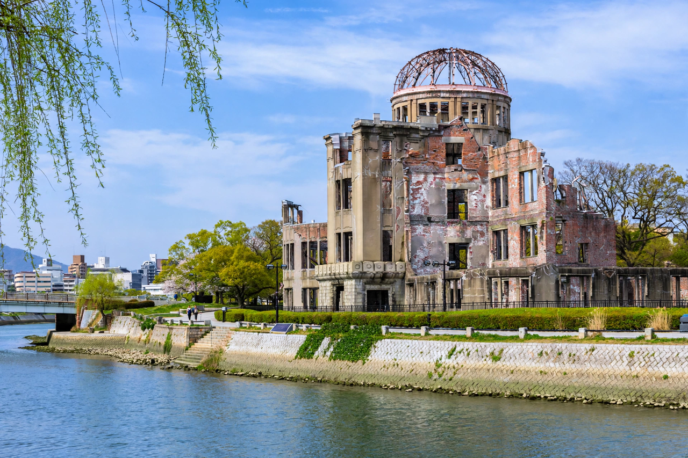

Hiroshima
From Wikipedia, the free encyclopedia

[Image: The Atomic Bomb Dome (Hiroshima Peace Memorial), preserved ruins beside the Motoyasu River]The Atomic Bomb Dome (Hiroshima Peace Memorial), preserved ruins beside the Motoyasu River
Hiroshima is a city in western Honshu, Japan, built on the delta of the Ōta River. It is known worldwide as the first city targeted by a nuclear weapon, and is today a major industrial city and a global symbol of peace advocacy.
The atomic bombing
On 6 August 1945 the United States dropped the uranium bomb "Little Boy" on Hiroshima, chosen as a military-industrial target that had so far been spared conventional bombing. The blast destroyed roughly 70% of the city's buildings and killed a large fraction of its population — estimates of deaths by the end of 1945 commonly range around 90,000–140,000, including many Korean forced labourers and some Allied prisoners. Survivors, known as hibakusha, carried the physical and social effects of radiation for life.
Peace memorial
Near the hypocentre, the ruined dome of the former Industrial Promotion Hall was preserved as the Atomic Bomb Dome, centrepiece of the Hiroshima Peace Memorial Park designed by Kenzō Tange, and a UNESCO World Heritage Site since 1996. The Peace Memorial Museum documents the bombing and its aftermath, and each 6 August the city holds a Peace Memorial Ceremony. Hiroshima's mayors have campaigned for nuclear abolition for decades.
Modern city
Rebuilt after the war, Hiroshima is home to about 1.2 million people, the headquarters of Mazda, and a noted food culture (its layered style of okonomiyaki). The Hiroshima Carp baseball team and the near-island shrine of Itsukushima at Miyajima are regional symbols.